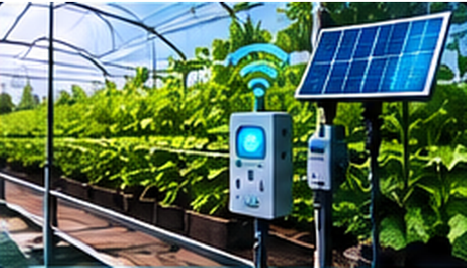
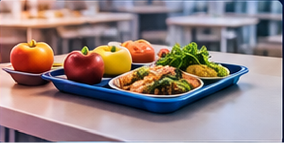
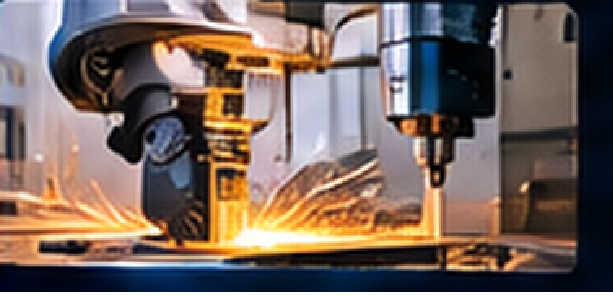
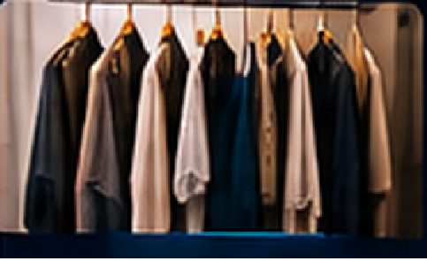

Desenvolvimento web
Protótipos e interfaces web com HTML; organização de telas, funcionalidades e perfis de usuário.
PORTFÓLIO DE VITOR GILLIARDI
Estudante de Desenvolvimento de Sistemas_
Estudante de Desenvolvimento de Sistemas interessado em transformar ideias em soluções por meio de sistemas web, automação, IoT e inovação.
.jpeg)
01 — QUEM SOU
Gosto de pesquisar problemas, planejar funcionalidades e transformar ideias em protótipos.
Sou estudante de Desenvolvimento de Sistemas, com interesse em programação, tecnologia e inovação. Tenho participado da idealização, do planejamento e do desenvolvimento de projetos que envolvem sistemas web, automação, Internet das Coisas (IoT), sustentabilidade e empreendedorismo.
Minha atuação inclui identificar problemas, propor soluções, definir funcionalidades, pesquisar tecnologias e participar da construção de protótipos. Busco ampliar meus conhecimentos e criar soluções que possam ser aplicadas em situações reais.
02 — FERRAMENTAS
Conhecimentos e experiências descritos nos projetos e atividades.
Protótipos e interfaces web com HTML; organização de telas, funcionalidades e perfis de usuário.
Noções práticas de ESP32, sensores e módulos eletrônicos; montagem e teste de protótipos.
Levantamento de requisitos, organização de sistemas e monitoramento de dados.
Pesquisa de tecnologias, análise inicial de viabilidade e possibilidades de aplicação de IA.
IA APLICADA AO DESENVOLVIMENTO
“Utilização estratégica da Inteligência Artificial para transformar ideias em soluções, otimizar processos e ampliar as possibilidades de desenvolvimento tecnológico.”
03 — APRENDIZADO
Escola Técnica Exemplo · Instituição fictícia
Formação com foco em lógica de programação, desenvolvimento web, banco de dados e fundamentos de análise de sistemas.
04 — IDEIAS, PROTÓTIPOS E PRÁTICA



Proposta de plataforma escolar para monitoramento ambiental, uso consciente de recursos e recuperação de áreas verdes. Participei do planejamento e de um protótipo de irrigação com ESP32, sensor de umidade, relé e bomba.
A primeira imagem é ilustrativa; as demais registram documentação e experimentos.

Proposta para organizar usuários, chamada, presença de alunos e estimativa de refeições. Trabalhei na definição de perfis, permissões, módulos e informações operacionais; sem confirmação de implantação oficial.
Imagem ilustrativa retirada do documento de projetos.
Conceito de plataforma para participação cidadã em ações ambientais, registro de ocorrências e arborização urbana. Planejei recursos como registros com foto e localização, sugestões de espécies, gamificação e Eco Coins.
Imagem conceitual do documento; não representa um produto implantado.


Planejamento de uma interface para demonstrar programação e movimentos de máquinas em uma Feira de Profissões. A imagem de tela registra um simulador com controles de torno CNC, telemetria e código G.
A imagem industrial é ilustrativa; a tela é um registro do simulador.

Pesquisa para estruturar uma marca de roupas com identidade híbrida, elegante e tecnológica. O trabalho inicial direciona análise de público, concorrentes, tecnologias têxteis, custos e viabilidade, sem afirmar patente ou ineditismo.
Imagem ilustrativa retirada do documento de projetos.
Ideia de plataforma para aproximar consumidores e pequenos empreendedores locais, permitindo solicitar e comparar orçamentos. Explorei formas de monetização como mensalidade para comerciantes ou comissão por negócio.
Imagem ilustrativa retirada do documento de projetos.
Conceito de serviço de polimento automotivo, com foco em caminhões e atendimento também a carros e motos. A proposta organiza serviços para rodas, cabines, pintura, tanques, alumínio, metais e peças cromadas.
Imagem ilustrativa retirada do documento de projetos.

.jpeg)
.jpeg)
Estudo de fabricação digital com modelo de medalha, operação da impressora e controle pelo Pronterface.

Registro de um exercício de formulário para cadastro de alunos, com campos de identificação. Está apresentado como atividade independente, sem atribuí-lo ao sistema de alimentação escolar.
Os estágios dos projetos seguem o documento: propostas, pesquisas, conceitos e protótipos são identificados como tais. As imagens marcadas como ilustrativas são referências visuais, não registros de protótipos concluídos.
05 — PRÓXIMO PASSO
Meu objetivo é ganhar experiência prática em programação, desenvolvimento de sistemas, automação e inovação. Quero participar de projetos, criar soluções e ampliar meus conhecimentos.
vitor.gilliardi@example.com ↗E-mail de exemplo — substitua pelo seu endereço real.